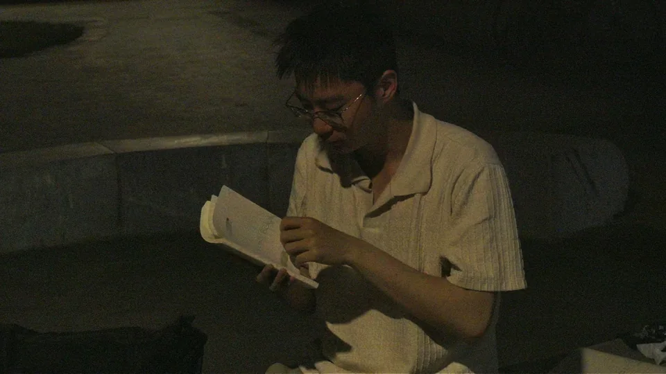

BIOGRAPHY
个人简介
半北山河是一位专注乐高内容的独立 Bilibili 创作者。
2017年的一天，一位10岁的男孩用旧手机拍摄了他的第一条乐高视频。9年间，这位男孩创作一份又一份作品，成为我们熟悉的“半北山河”。他用热情浇筑乐高评测，用创意讲中国故事，更站在乐高迷的立场，为乐高玩家发声。
1100万播放，4.5万粉丝，《用乐高讲好中国故事》用MOC和视频讲述乐高与中华优秀传统文化、非遗；《幻影忍者系列评测》用套装评测回溯童年的经典动画；《人仔档案馆》探索有意思的人仔，科普背后的故事；《乐高与中国改革开放的相遇》实地探访北京，讲述乐高在中国的发展历程；《捕蛇者说》用定格动画演绎文言文《捕蛇者说》，让网友看到乐高版的诗词、文言文等中华经典。

欢迎来到半北山河的网站！在这里观看更多作品，分享投稿你的想法和创意！